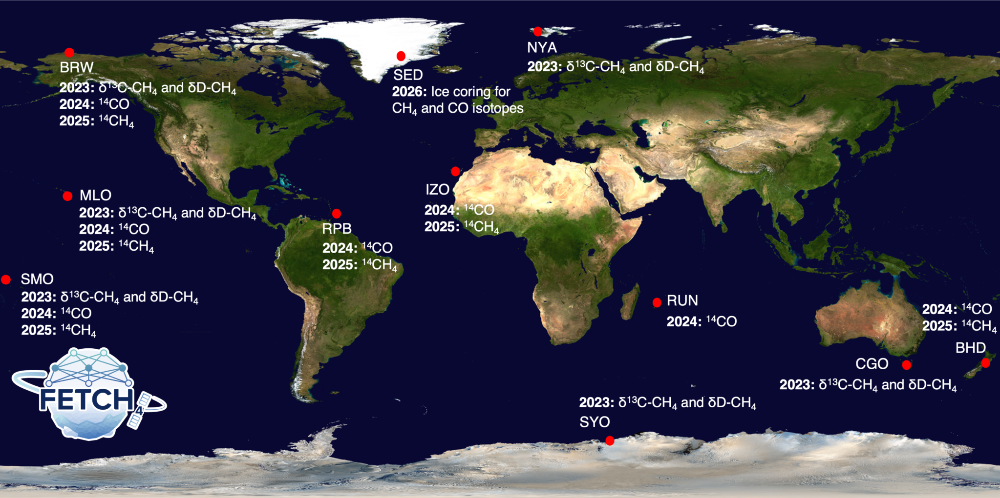

Working Group 1: Measurements
WG1 is responsible for producing the observational data needed to constrain the sources and sinks of atmospheric methane (CH4) and its isotopologues. This group leads both continuous monitoring efforts and targeted measurement campaigns, using advanced laboratory and field techniques to generate globally distributed and historically significant datasets. 
Although methane is the second most important anthropogenic greenhouse gas, major uncertainties remain in its atmospheric budget. The lack of comprehensive data on source types (fossil, microbial, biomass burning) and chemical sinks (primarily oxidation by OH) limits our ability to understand both current trends and long-term climate feedbacks. Isotopic measurements of methane and its co-emitted species offer key insights, but until recently, these measurements were rare and lacked global coverage.
WG1 has completed a full year of 14CO sampling at a global network of clean-air sites and has initiated 14CH4 sampling at six of those stations, successfully capturing the latitudinal gradient in 14CH4 abundance for the first time. We have collected more than 500 measurements of δD and δ13C of CH4 at nine stations worldwide, and INSTAAR is now analyzing δD-CH4 from NOAA flask samples. WG1 has also completed new high-precision laboratory determinations of the kinetic isotope effect (KIE) for the CH4+OH reaction, a key uncertainty in isotope-based source attribution. At 298 K, we find a δ13C KIE of 5.5 ± 0.1‰ and a δD KIE of 314.8 ± 8.2‰, along with the temperature dependence of both. In addition, WG1 has organized the first intercomparison of 14CH4 measurements among five international laboratories, an important step toward standardizing this emerging measurement capability across the community.